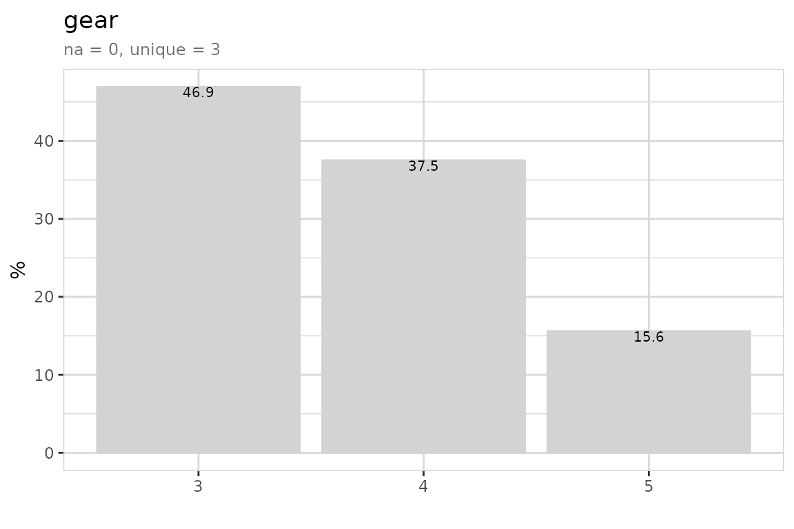
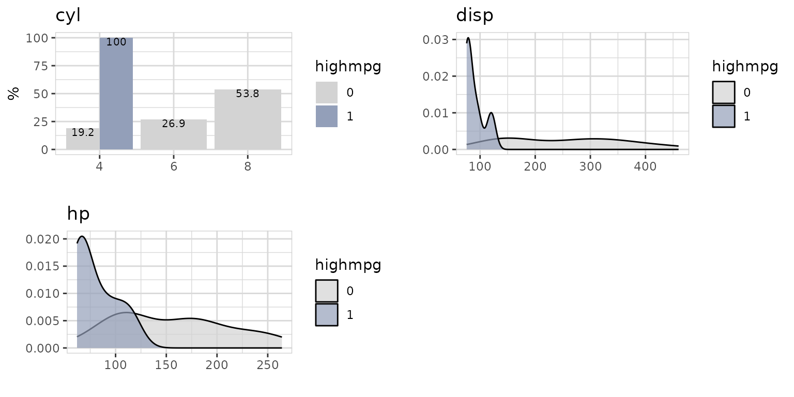
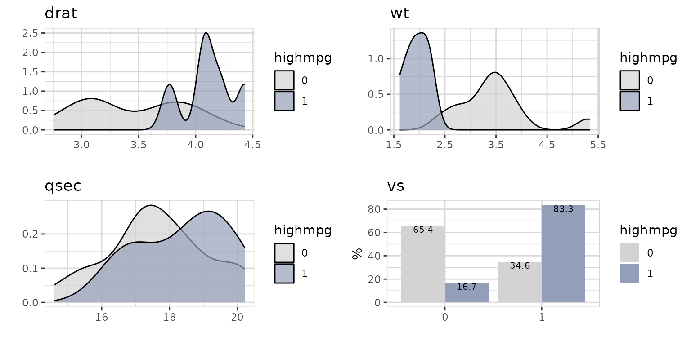
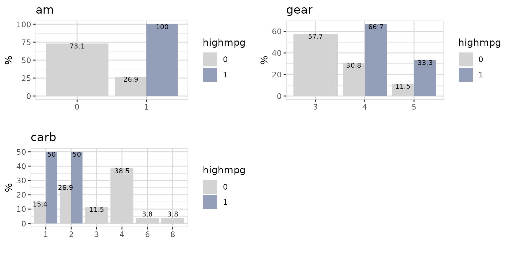
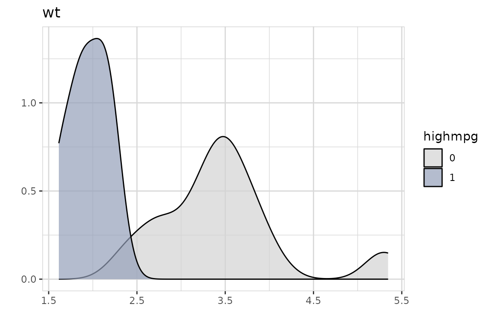
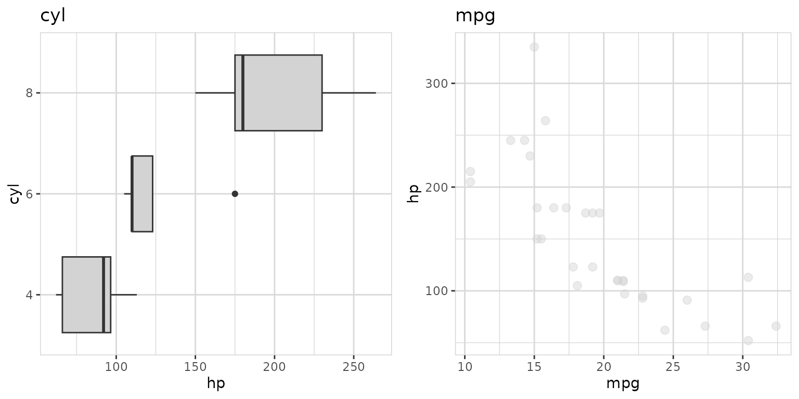

How to explore the mtcars dataset using the explore package.
The explore package simplifies Exploratory Data Analysis (EDA). Get faster insights with less code!
The mtcars dataset comes with the dplyr package. We use the packages
explore and dplyr (for mtcars, select(),
mutate() and the%>% operator).
Explore dataset
mtcars %>% explore_tbl()
mtcars %>% describe()
#> # A tibble: 11 × 8
#> variable type na na_pct unique min mean max
#> <chr> <chr> <int> <dbl> <int> <dbl> <dbl> <dbl>
#> 1 mpg dbl 0 0 25 10.4 20.1 33.9
#> 2 cyl dbl 0 0 3 4 6.19 8
#> 3 disp dbl 0 0 27 71.1 231. 472
#> 4 hp dbl 0 0 22 52 147. 335
#> 5 drat dbl 0 0 22 2.76 3.6 4.93
#> 6 wt dbl 0 0 29 1.51 3.22 5.42
#> 7 qsec dbl 0 0 30 14.5 17.8 22.9
#> 8 vs dbl 0 0 2 0 0.44 1
#> 9 am dbl 0 0 2 0 0.41 1
#> 10 gear dbl 0 0 3 3 3.69 5
#> 11 carb dbl 0 0 6 1 2.81 8The data was extracted from the 1974 Motor Trend US magazine, and comprises fuel consumption and 10 aspects of automobile design and performance for 32 automobiles (1973–74 models).
| variable | description |
|---|---|
| mpg | Miles/(US) gallon |
| cyl | Number of cylinders |
| disp | Displacement (cu.in.) |
| hp | Gross horsepower |
| drat | Rear axle ratio |
| wt | Weight (lb/1000) |
| qsec | 1/4 mile time |
| vs | V/S |
| am | Transmission (0 = automatic, 1 = manual) |
| gear | Number of forward gears |
| carb | Number of carburetors |
Number of gears?
Is there a difference between cars with 3,4 and 5 gears?

Most of the cars in the dataset have 3 or 4 gears. 15.6% have 5 gears.
Now check relation between some of the variables and gear:
mtcars %>%
select(gear, mpg, hp, cyl, am) %>%
explore_all(target = gear)
We see that 100% of cars with am = 0 (automatic) have 3 gears. All cars with am = 1 (manual) have 5 gears.
High miles per gallon?
Let’s define an interesting target: Cars that have mpg (miles per gallon) > 25
We copy the data and create a new target variable
data <- mtcars %>%
mutate(highmpg = if_else(mpg > 25, 1, 0, 0)) %>%
select(-mpg)
data %>% explore(highmpg)So, about 19% of all cars have mpg > 25. What else is special about them?
data %>%
select(highmpg, cyl, disp, hp) %>%
explore_all(target = highmpg)
data %>%
select(highmpg, drat, wt, qsec, vs) %>%
explore_all(target = highmpg)
data %>%
select(highmpg, am, gear, carb) %>%
explore_all(target = highmpg)
There are some strong differences between cars with / without “high mpg”.
Now let’s grow a decision tree:
data %>%
explain_tree(target = highmpg)Growing a decision tree, shows that there seems to be a very strong correlation between wt (weight) and “high mpg”. Cars with a low weight are much more likely to have “high mpg”.
Let’s take a closer look to wt:


The plot shows the percentage of cars with high mpg. Cars with high mpg have a weight < 2.5. So wt (weight) is a good predictor for high mpg.
There is a strong correlation between wt and mpg.
If you want to have high miles per gallon (mpg), buy a car with low weight (wt)!
Horsepower?
Is there a relation between horsepower and other variables like number of cylinder?
Let’s build a decision tree with horsepower as target:
mtcars %>%
explain_tree(target = hp, minsplit=15)All cars have an average hp of 147 (shown in the top node). Then the
data is split by cyl. Cars with cyl<7 (56% of all cars) have an
average hp of 98 and cars with cp>=7 (44% of all cars)
have an average hp of 209.
The variables cyl and mpg can explain hp. The bottom nodes are showing an average hp of 80, 121 and 209.
In the tree rounded values are shown. If you want to know the exact
values for each split, you can use the parameter
out = "model" to get the model returned and take a
look.
model
#> n= 32
#>
#> node), split, n, deviance, yval
#> * denotes terminal node
#>
#> 1) root 32 145726.900 146.68750
#> 2) cyl< 7 18 14638.940 98.05556
#> 4) mpg>=21.45 10 3618.000 80.00000 *
#> 5) mpg< 21.45 8 3685.875 120.62500 *
#> 3) cyl>=7 14 33782.360 209.21430 *You see that the split for mpg is done at exactly 21.45
Now let’s take a look at the direct correlation the variables used in the tree and hp:
mtcars %>%
select(hp, cyl, mpg) %>%
explore_all(target = hp)
Cars with 8 cylinders have higher horsepower.
Cars with low miles per gallon (mpg) have higher horsepower!